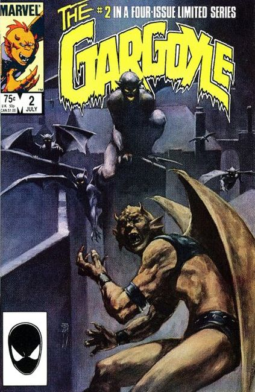
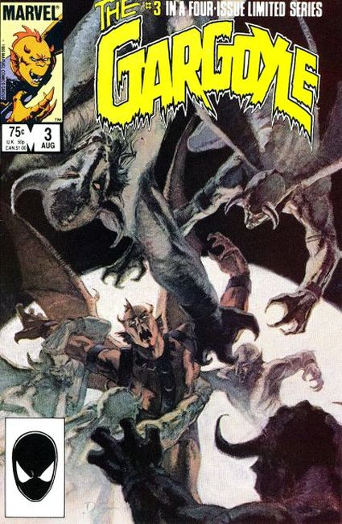
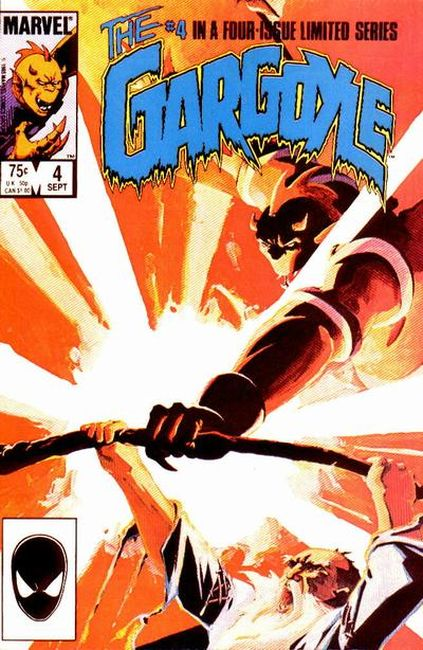

"Love and Death!" Written by J.M. Dematteis. Art by Mark Badger. Painted cover by Berni Wrightson. Isaac Christians is trapped within the monstrous form of the Gargoyle! He struggles with his supernatural urges and tries to focus his demonic side toward fighting for what is right. But what happens when the monster side of him takes control?

"Burning Bright: The Gargoyle's Tale!" Written by J.M. Dematteis. Art by Mark Badger. Painted cover by Jon J. Muth. Someone or Something is haunting and plaguing Isaac Christians! What enemy from the past has a vendetta with the Gargoyle?

"Lost Souls: The Druid's Tale!" Written by J.M. Dematteis. Art by Mark Badger. Learn the macabre tale that has set the Gargoyle and the Druid on an unavoidable collision course.

"Battlefield!" Written by J.M. Dematteis. Art by Mark Badger. Don't miss the final supernatural showdown between the Gargoyle and the Druid, a battle centuries in the making.